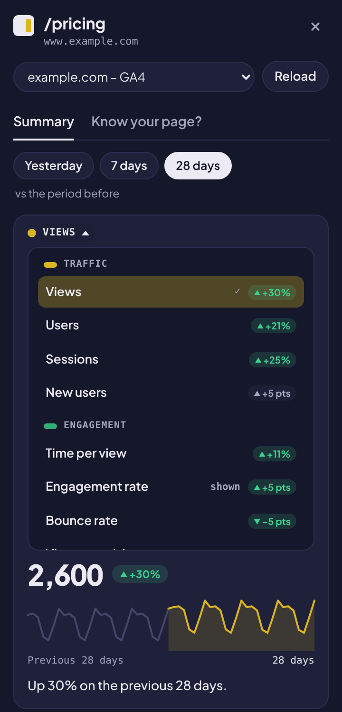
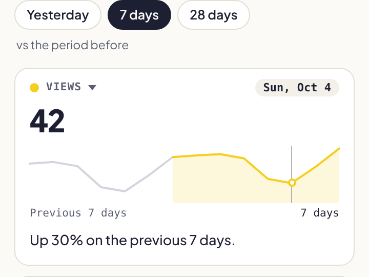
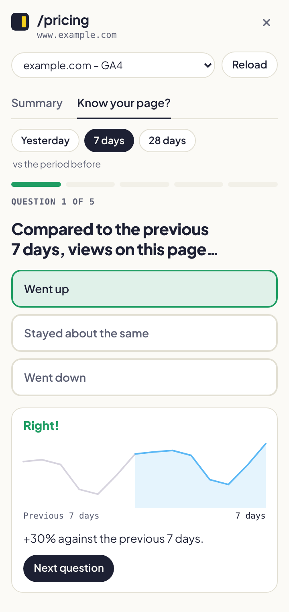

Case study
From a click overlay to a GA4 side panel
How I turned an internal tool for web managers into SideNote Analytics, a free Chrome extension that shows a page's Google Analytics 4 data beside the page itself. Product, data layer and measurement, end to end.
The problem
Most questions about a website start on a specific page: is this landing page still working, where do its visitors come from, did last week's change help? GA4 can answer all of them, but not quickly. You open Explore or a report, add a page-path filter, pick a date range and a comparison, and repeat for the next page.
For web managers and content owners, who think in pages rather than reports, that friction means the data simply doesn't get checked.
Where the idea came from
At work I lead GA4 for several education websites where every link and button is tagged. To make that data useful to our web managers, I built an internal Chrome extension that overlays GA4 click counts next to each element while they browse the site. Instead of opening a report, they saw the numbers on the page they were already editing.
SideNote Analytics generalizes that idea. It works for any site with a GA4 property, needs no setup or tagging changes, and covers the page as a whole rather than individual clicks.
What I built
Click the icon on any page and a side panel opens with that page's numbers. SideNote finds the matching GA4 property on its own, shows four metric cards compared with the previous period, and lets you hover a trend line to read any single day.



Decisions that shaped it
- Every number carries its comparison. A figure on its own invites the wrong question. Each card compares the selected range with the same-length period before it, so the first thing you see is direction, not just size.
- Four cards, your choice. Sixteen metrics fit in the panel, but four fit in a glance. Users choose which four, and the choice follows their Chrome profile from page to page.
- Honesty over neatness. GA4 samples, applies thresholds and collapses rows into "(other)". SideNote reads those signals from the API response and marks affected figures. A missing report shows "no data", never a zero, and a percentage change on a tiny base isn't shown at all.
- Read-only, and no server. Requests go straight from the browser to Google with a read-only token. There is no backend to secure, pay for or explain in a privacy review, and no tracking code in the extension.
- A quiz, to build the habit. "Did views go up or down?" is a question people enjoy guessing. The quiz turns the same data into five quick questions with a chart for each answer, and a share line that never names the site.
Under the hood
- Property matching. The GA4 Admin API lists the user's properties and web streams. SideNote matches the page's host against them, labels subdomain or sibling matches as guesses, and caches the index for a week.
- Report layout. Two
batchRunReportscalls cover nine reports for the selected range and the period before it. The site-wide report is cached and shared between pages of the same site, and responses are cached for a few minutes so moving between tabs costs nothing. - A tested core. All logic that turns API responses into cards and quiz questions lives in pure functions, and the test suite runs before every build.
Launch
Shipping meant work outside the code: a Google Cloud project and OAuth client tied to the store's extension ID, a privacy policy that matches the permissions, written justifications for each permission, and store assets. The listing was approved in a day. The site moved to its own domain with Search Console verification, a sitemap and structured data.
Measuring the product
The extension itself collects nothing, by design. So measurement lives around it: on the website, in the store, and in the links that connect them.
- ShareQuiz share links carry UTM tags (extension / share)
- WebsiteGA4 via GTM, Consent Mode v2, custom events
- Store pageUTM-tagged store links, store_click key event
- InstallChrome Web Store analytics in GA4
| Event | Fires when | Parameters |
|---|---|---|
store_click | Someone clicks through to the store (key event) | link_text, link_url |
nav_click | A header link is used | link_text, link_url |
faq_open | An FAQ question is opened | faq_question |
outbound_click | A link to another site is clicked | link_text, link_url |
consent_update | A visitor accepts or declines analytics cookies | consent_analytics |
Events are pushed to the dataLayer by the site and mapped in GTM with one regex trigger and one GA4 event tag. Analytics cookies wait for consent; until then GA4 receives cookieless signals only. GA4's built-in outbound-click and history-change tracking are switched off so nothing is counted twice.
What's next
- Complete Google's OAuth verification, so the consent screen shows SideNote as a verified app.
- Export the site's GA4 data to BigQuery and build a Looker Studio view of the full share-to-install funnel.
- Collect feedback from the first users and decide which of the 16 metrics deserve a place by default.
Built by Veysel Mehmetoglu, marketing and web analytics analyst.